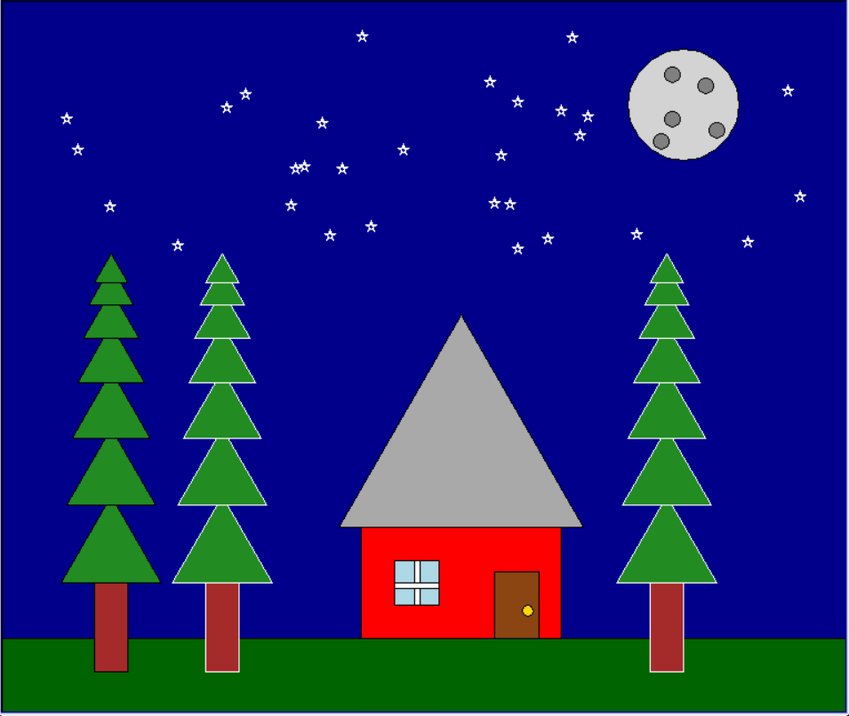

This page demonstrates the refactored turtle graphics scene from Project 3. The original scene has been broken down into smaller helper functions for the ground, tree, house, moon, and stars, and additional trees were added to show reusability.

This project refactors the original scene into separate helper functions (ground, tree, house, moon, stars) and adds extra trees to demonstrate reuse. Download the full script to inspect or run.